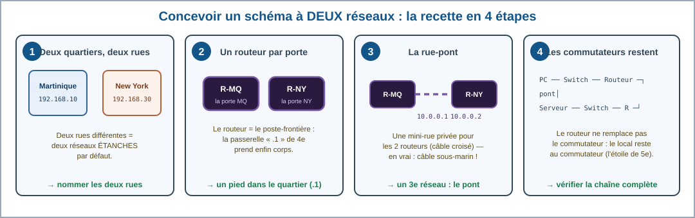
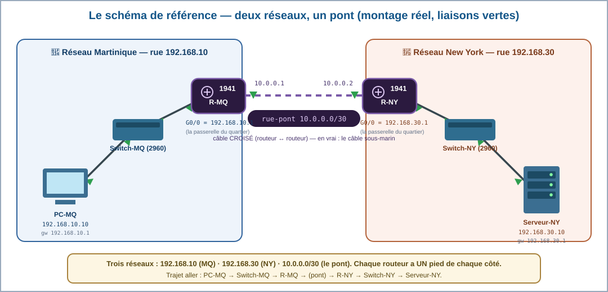
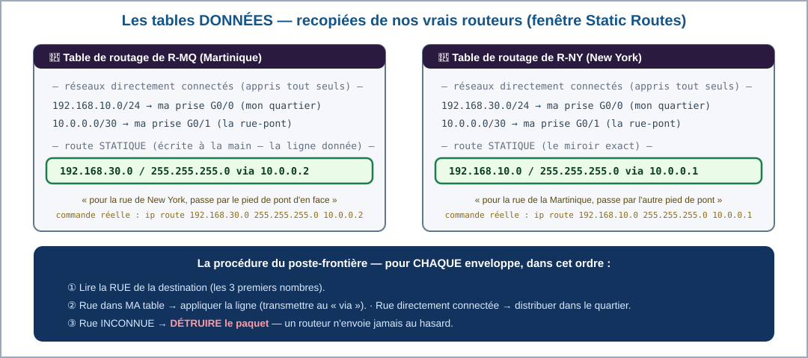
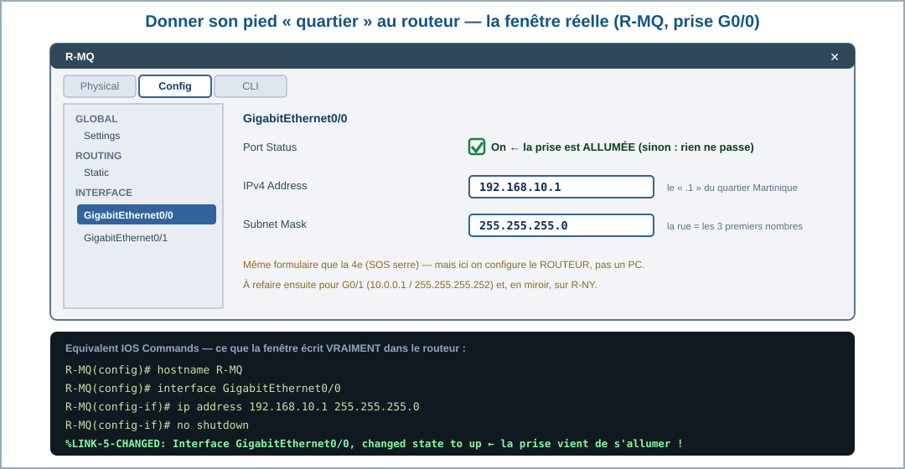
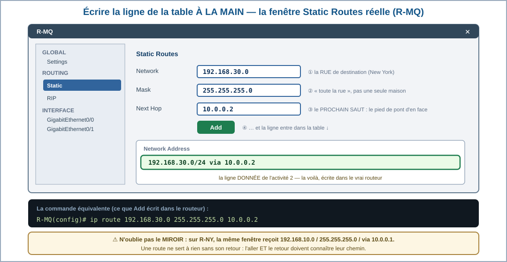
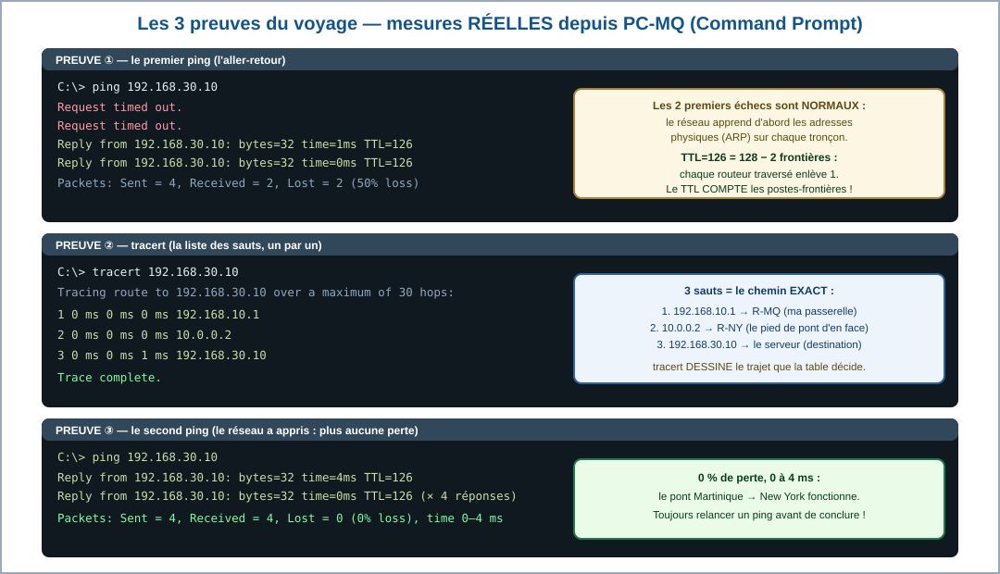
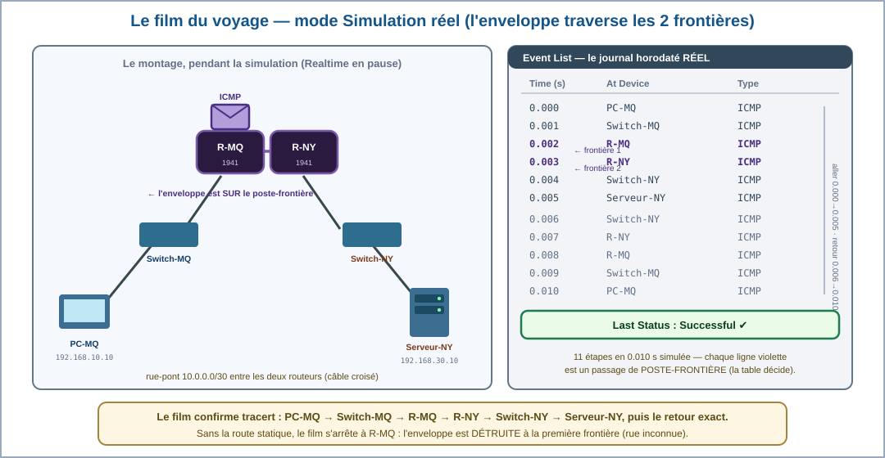

Thème 2 · Martinique — 3e · Atelier : faire communiquer DEUX réseaux — routeurs, tables de routage et preuves (Cisco Packet Tracer 8.2)
Tu viens de suivre le chemin d'une donnée de Sainte-Luce jusqu'au reste du monde, et en 4e tu avais déjà adressé puis dépanné le réseau du jardin.
Cette année, ce qui change : tu ne suis plus un chemin décrit : tu le construis. Relier la Martinique à New York dans un simulateur, c'est découvrir qu'entre deux réseaux il faut quelqu'un qui traduit — et que ce quelqu'un est une machine qu'on configure.
Tu prends en route ? Deux machines de réseaux différents ne se parlent que par un routeur, c'est-à-dire un traducteur d'adresses.
Quatre gestes à faire une fois, au début, et ta séance ne se perdra pas. Tu les as peut-être déjà faits une autre année : refais-les, c'est court. Et si tu ne les as jamais faits, tout est écrit ici — tu n'as besoin de rien d'autre.
NIVEAU-SUJET-TON NOM.pkt..pkt est ton rendu. Ajoutes-y une capture d'écran de la topologie si le compte rendu la demande.Le mode essentiel masque le référentiel et les corrections : il ne reste que les consignes et les exercices. À activer si la page te paraît trop chargée.
Le club techno du collège échange depuis la 4e avec la New York Public Library — souvenez-vous du Book Train. Cette année, le partenariat devient sérieux : la classe doit envoyer ses relevés de la station d'alerte cyclonique au serveur du partenaire, à New York. M. Firmin arrive avec un défi : « Vous savez faire vivre UN réseau — votre serre en est la preuve. Mais votre message, lui, doit QUITTER votre réseau, traverser l'océan et entrer dans un réseau qui n'est pas le vôtre. Montrez-moi, dans le simulateur, comment DEUX réseaux se parlent : construisez le nôtre, construisez le leur, posez le pont entre les deux — et prouvez-moi chaque saut du voyage. »
Ta mission d'expert : concevoir un schéma à DEUX réseaux reliés par des routeurs, jouer au poste-frontière avec une table de routage donnée, construire le pont dans Cisco Packet Tracer, et rapporter les preuves du voyage : ping, tracert et la simulation saut par saut.
Pourquoi un simple commutateur ne suffit-il plus — et comment les routeurs et leurs tables font-ils voyager un message de réseau en réseau ?
Le niveau attendu est exactement le même qu'avec la consigne libre : ces débuts de phrases retirent l'obstacle de la rédaction, pas l'exigence scientifique. Recopie-les et complète chaque « ____ ».
Chaque code est écrit ici en entier, avec ce que l'élève FAIT réellement pour le travailler. Les activités rappellent leur compétence sous leur titre.
3e_C4.7 — « Identifier et représenter la circulation d'une information dans le réseau Internet. » → concevoir puis lire le schéma à deux réseaux (act. 1), suivre le voyage réel du message au tracert et dans la simulation saut par saut (act. 4-5).
3e_C4.8 — « Justifier la nécessité d'un protocole de routage pour faire communiquer plusieurs réseaux (activité débranchée, table de routage donnée). » → la séquence suit LITTÉRALEMENT le libellé : jeu débranché du poste-frontière avec les tables de routage DONNÉES de nos vrais routeurs (act. 2), puis construction et preuve (act. 3-5).
D2 — Les méthodes et outils pour apprendre : composante « coopération et réalisation de projets » (binômes pilote/copilote, jeu de rôles du poste-frontière) et composante « outils numériques pour échanger et communiquer » (le simulateur, le fichier .pkt, les relevés de preuve).
D4 — Les systèmes naturels et les systèmes techniques : composante « conception, création, réalisation » (concevoir SON schéma à deux réseaux puis le réaliser) et composante « démarches scientifiques » (hypothèse, preuves par le ping, le tracert et la simulation — dont la lecture du TTL).
Le référentiel du dépôt rattache officiellement ces codes à D2 et D4 — c'est ce qu'affiche le bandeau. En pratique, l'atelier mobilise fortement le domaine 1 — Les langages pour penser et communiquer : on y lit une table de routage comme un document technique normalisé (act. 2), on y écrit des adresses et des masques dans une notation stricte où un chiffre change tout (act. 3) et on y rédige ce qu'une preuve établit — un TTL qui descend, un tracert à trois sauts (act. 4-5). Utile pour le LSU : la trace écrite de cet atelier est évaluable côté langages.
5.1 — Résoudre des problèmes techniques, niveau 3 visé — repère officiel : « Identifier des problèmes techniques liés à un environnement informatique. » Au niveau 3, l'élève élabore sa démarche : interpréter seul les deux premiers échecs du ping, choisir le bon outil de preuve (ping, tracert ou simulation) selon la question posée (act. 4-5, cartouche complet dans l'activité 4). La compétence 5.2 — Évoluer dans un environnement numérique est travaillée (manipulation du simulateur) mais non évaluée.
S'y ajoute 2.3 — Collaborer : le pont se construit à deux, un réseau chacun, et il ne fonctionne que si les deux moitiés se parlent — les routes sont miroir, une erreur d'un côté fait échouer les deux. C'est la meilleure démonstration de collaboration que puisse offrir un réseau. Travaillée, non évaluée ici.
Avec un adulte, à la maison : lancer tracert vers un site lointain et compter les sauts réels — chaque ligne est un routeur traversé. Observation seulement : on ne touche JAMAIS au réseau pédagogique — d'où l'entraînement en simulation.
Variante matériel, si l'établissement le permet : un TP sur réseau ISOLÉ — deux commutateurs dédiés non reliés au réseau pédagogique, deux groupes d'adresses (192.168.50.x et 192.168.60.x), et la constatation que sans routeur, les deux moitiés ne se voient pas. C'est la preuve par le manque : le pont se comprend d'autant mieux qu'on a vécu son absence.
Construire les DEUX réseaux et leur pont dans Cisco Packet Tracer 8.2, configurer les routeurs, prouver le voyage par ping/tracert/Simulation. Toutes les captures de cette page viennent du vrai logiciel, valeurs mesurées comprises.
Jouer le poste-frontière en classe (act. 2, tables de routage imprimées), lire les schémas de la page, et utiliser le mini-simulateur du poste-frontière intégré à l'activité 5.
Cet atelier part de ce que tu as paramétré en 4e. Trois questions, aucune note : juste un aiguillage. 3 bonnes réponses : tu enchaînes sur l'activité 1. 2 ou moins : ouvre la capsule « Je révise la 4e en 3 minutes » juste en dessous — et tu repars à égalité.
Le masque découpe l'adresse en deux : ce qui identifie le réseau et ce qui identifie la machine. Avec 255.255.255.0, les trois premiers nombres sont la rue et le dernier la maison. Deux machines qui n'ont pas la même « rue » ne se voient pas directement : il leur faut un intermédiaire. C'est exactement le sujet de cet atelier.
La passerelle, c'est l'adresse de cet intermédiaire : la porte de sortie. En 4e, tu l'as écrite dans la fenêtre IP Configuration sans forcément t'en servir — la serre n'avait qu'un seul réseau. Ici, la porte existe pour de bon, et elle mène quelque part.
Le ping prouve l'aller-retour : « Reply from », c'est la réponse qui revient. Un test qui ne revient pas ne prouve rien du tout — d'où l'habitude de toujours re-tester après réparation.
👥 Qui fait quoi — et quand on échange
Deux rôles seulement, et on échange à la moitié du temps. Un rôle est un tour, pas une étiquette.
| Rôle | 1re moitié | 2e moitié |
|---|---|---|
| Pilote | ||
| Vérificateur |
À recopier à chaque séance. Si personne ne change de rôle, c'est toujours le même qui apprend à tenir le clavier — et ce n'est pas celui qui en avait le plus besoin.
La règle du jeu (règle d'or de l'atelier) : tu conçois d'abord, tu compares ensuite. Le schéma de référence n'apparaît qu'à l'étape de lecture — c'est TA proposition qui compte, tant qu'elle respecte les lois du réseau.

Le réseau de la Martinique garde sa rue 192.168.10 (celle du jardin et de la station). Le réseau de New York a la sienne : 192.168.30. Deux quartiers, deux rues — tu sais depuis la 4e que deux rues différentes = deux réseaux qui ne s'entendent PAS tout seuls.
Souviens-toi de la 4e : tu réservais le .1 à la « passerelle », la porte du quartier. Cette année, la porte prend corps : c'est un routeur — un appareil qui possède UN pied dans le quartier (l'adresse .1) et UN pied dehors. R-MQ garde la porte martiniquaise, R-NY la porte new-yorkaise.
Les deux routeurs doivent se parler : on crée pour eux une minuscule rue privée, la rue-pont 10.0.0.x — deux maisons seulement : R-MQ y habite au 10.0.0.1, R-NY au 10.0.0.2. Dans la vraie vie, ce pont est un câble sous-marin, une fibre, un satellite… Dans notre atelier : un câble croisé entre les deux routeurs.
Le routeur ne remplace pas le commutateur : DANS chaque quartier, le trafic local passe toujours par le commutateur (l'étoile de la 5e). Le routeur n'est consulté que pour SORTIR. Ton schéma complet aligne donc, de gauche à droite : PC-MQ → Switch-MQ → R-MQ ⇢ pont ⇢ R-NY → Switch-NY → Serveur-NY.
Le niveau attendu est exactement le même qu'avec la consigne libre : ces débuts de phrases retirent l'obstacle de la rédaction, pas l'exigence scientifique. Recopie-les et complète chaque « ____ ».
👥 Revue croisée : échange ton schéma avec le binôme voisin — deux rues différentes ? un routeur par quartier ? la rue-pont entre les deux ?
Voici l'architecture que nous avons RÉELLEMENT construite dans Packet Tracer — c'est elle que tu monteras en séance 2.

Relis les vignettes dans l'ordre : deux rues (étape 1), un routeur-porte par quartier (étape 2), la rue-pont 10.0.0.x (étape 3), le commutateur qui reste dans chaque quartier (étape 4). Sur le schéma de référence, suis le trajet de gauche à droite en lisant chaque adresse.
Pense à deux îles : chaque île a ses routes internes (le commutateur) et son port (le routeur). Le pont entre les ports est une route à part entière, avec ses deux extrémités numérotées (10.0.0.1 et 10.0.0.2). Un habitant qui veut envoyer un colis sur l'autre île le dépose à SON port (sa passerelle .1) — jamais directement sur le pont.
Étape 1 : deux rues différentes = deux réseaux étanches par défaut : le commutateur ne connaît que sa rue — c'est pour cela qu'un « très long câble » ne résout rien.
Étape 2 : le routeur est l'appareil-frontière : il fait passer les messages D'UN réseau À L'AUTRE, là où le commutateur distribue DANS le réseau.
Étape 3 : chaque routeur a DEUX adresses — un pied dans son quartier (192.168.10.1 ou 192.168.30.1), un pied sur la rue-pont (10.0.0.1 ou 10.0.0.2). Trois réseaux en tout : les deux quartiers + la rue-pont.
Étape 4 : le commutateur reste entre les terminaux et le routeur. Et la passerelle de 4e a maintenant un corps : c'est le pied « quartier » du routeur.
Mise en scène : un élève joue R-MQ, le poste-frontière martiniquais. Devant lui, SA table de routage — celle, exacte, de notre vrai routeur. Les autres élèves lui apportent des enveloppes. Pour chaque enveloppe, le routeur applique la même procédure : lire l'adresse de destination → chercher sa rue dans la table → appliquer la ligne trouvée… ou détruire le paquet s'il n'y a pas de ligne.

Le niveau attendu est exactement le même qu'avec la consigne libre : ces débuts de phrases retirent l'obstacle de la rédaction, pas l'exigence scientifique. Recopie-les et complète chaque « ____ ».
La procédure du routeur tient en trois cas : rue dans MA table → j'applique la ligne ; rue directement connectée → je distribue ; rue inconnue → je détruis. Pour la question 5, imagine devoir écrire À LA MAIN une ligne pour chaque réseau du monde… et la corriger à chaque panne.
Deux réseaux = 1 ligne par table : gérable à la main (c'est notre « route statique »). Des centaines de milliers de réseaux qui apparaissent, disparaissent, tombent en panne à chaque seconde = impossible à suivre humainement. Le protocole de routage est la solution des routeurs : ils BAVARDENT entre eux (« moi je sais joindre telle rue ») et mettent à jour leurs tables automatiquement — c'est exactement ce que le libellé te demande de justifier.
Les trois cas du poste-frontière : ① rue dans la table → appliquer la ligne (n°1 : via 10.0.0.2) ; ② rue directement connectée → rendre au quartier (n°2) ; ③ rue inconnue → DÉTRUIRE (n°3) — le routeur n'envoie jamais « au hasard ».
La ligne effacée (n°4) : l'enveloppe vers New York meurt à la frontière. La table n'est pas un confort : elle est LA condition du voyage.
La nécessité du protocole (n°5) : à l'échelle d'Internet, écrire et maintenir les tables à la main est impossible (nombre, pannes, changements permanents). Les protocoles de routage font s'échanger les routeurs leurs connaissances et recalculent les chemins automatiquement — y compris quand un câble sous-marin casse.
Binômes pilote/copilote : le pilote manipule, le copilote lit la recette et vérifie chaque valeur saisie (une erreur d'un chiffre = la panne de la 4e !) ; échange des rôles à l'étape E.
A. File → New. Poser les équipements du schéma de référence : 2 PC/Server (End Devices),
2 commutateurs 2960, et 2 routeurs 1941 (catégorie Network Devices → Routers).
B. Câbles DROITS (Copper Straight-Through) : PC-MQ→Switch-MQ (Fa0/1), Switch-MQ→R-MQ (Fa0/2 → GigabitEthernet0/0),
Serveur-NY→Switch-NY (Fa0/1), Switch-NY→R-NY (Fa0/2 → G0/0).
C. Câble CROISÉ (Copper Cross-Over, le trait pointillé) entre les deux routeurs : R-MQ G0/1 ↔ R-NY G0/1.
Routeur à routeur = câble croisé : c'est la rue-pont.
D. Renommer (Config → Display Name) : PC-MQ, Switch-MQ, R-MQ, R-NY, Switch-NY, Serveur-NY.
E. 🔄 (échange des rôles) Configurer R-MQ : Config → GigabitEthernet0/0 :
IPv4 192.168.10.1, masque 255.255.255.0,
cocher On (Port Status) ; puis G0/1 : 10.0.0.1 /
255.255.255.252, On. ⚠ Les prises d'un routeur naissent ÉTEINTES :
tant que « On » n'est pas coché, le triangle reste rouge — ce n'est pas une panne, c'est la règle.
F. Configurer R-NY en miroir : G0/0 = 192.168.30.1 /24, On ;
G0/1 = 10.0.0.2 / 255.255.255.252, On.
G. Les ROUTES STATIQUES (les lignes de table du jeu) : sur R-MQ, Config → ROUTING → Static :
Network 192.168.30.0, Mask 255.255.255.0,
Next Hop 10.0.0.2 → Add.
Sur R-NY, la ligne miroir :
192.168.10.0 / 255.255.255.0 via 10.0.0.1.
H. Adresser les terminaux (Desktop → IP Configuration) : PC-MQ = 192.168.10.10,
passerelle 192.168.10.1 ; Serveur-NY = 192.168.30.10,
passerelle 192.168.30.1. File → Save As :
pont_3X_NOM_Prenom.pkt.


Étape C pour le câble des routeurs ; étape E pour le « On » (lis l'avertissement ⚠) ; la figure des routes statiques affiche la commande équivalente en bas ; pour la dernière question, relis la table de l'activité 2 : combien de lignes contenait-elle ?
Un routeur connaît d'office les rues où il a un pied (ses réseaux « directement connectés ») : R-MQ connaît 192.168.10 et 10.0.0.x sans qu'on lui dise. La SEULE rue qui lui manque est 192.168.30 — d'où une unique ligne « via 10.0.0.2 ». C'est le miroir exact chez R-NY.
Câble croisé (pointillés) entre routeurs — les câbles droits servent aux liaisons terminal↔commutateur et
commutateur↔routeur. Port Status On : les prises d'un routeur naissent administrativement éteintes ;
« On » est le clic qui exécute le fameux no shutdown des
professionnels — le journal l'affiche, avec « changed state to up » quand la liaison monte.
La route statique s'écrit ip route 192.168.30.0 255.255.255.0 10.0.0.2 :
« pour la rue 192.168.30, passe par 10.0.0.2 ». Une seule ligne suffit : tout le reste est déjà directement
connecté. À l'échelle d'Internet, ces lignes se compteraient par centaines de milliers — d'où le protocole de
routage justifié en activité 2.
Voici la transcription intégrale et réelle de notre session — trois commandes tapées à la suite sur PC-MQ :

Lis la transcription bloc par bloc : le 1er ping raconte le « réveil » du chemin (2 échecs puis 2 réussites) ; le TTL est écrit sur chaque ligne Reply ; le tracert numérote les sauts 1, 2, 3 ; le 2e ping confirme 0% de perte. Compare TTL 128 (serre, 0 routeur) et 126 (ici, 2 routeurs).
Le TTL (Time To Live) est un compteur de sécurité embarqué dans chaque paquet : il part de 128 et chaque routeur traversé retire 1 — s'il atteint 0, le paquet est détruit (cela évite les paquets qui tourneraient en rond pour toujours). C'est aussi un magnifique indice de terrain : TTL lu = 126 → 128−126 = 2 frontières franchies. Le tracert, lui, interroge chaque frontière une à une : c'est la liste des tampons sur le passeport du message.
Les deux échecs initiaux : au premier voyage, chaque maillon (PC, routeurs) doit d'abord découvrir l'adresse « physique » de son prochain saut — pendant ces résolutions, les premiers pings expirent. Le second essai, chemin connu : 4/4, 0% de perte, 0-4 ms. Un expert relance donc TOUJOURS avant de conclure à la panne.
TTL=126 : parti de 128, moins 1 par routeur traversé (R-NY puis R-MQ au retour) : la preuve ARITHMÉTIQUE des deux frontières. Tracert : 192.168.10.1 (ma porte) → 10.0.0.2 (l'autre bout du pont) → 192.168.30.10 (destination) : trois sauts, et les commutateurs n'y figurent pas car ils ne franchissent aucune frontière — ils distribuent à l'intérieur.
Choisir son outil : ping = « est-ce que ça répond ? » ; tracert = « par OÙ ça passe ? » ; simulation = « montre-moi CHAQUE étape au ralenti ». Trois questions, trois outils.
Dans Packet Tracer, ouvre le fichier fourni 📦 3e_routage_MQ_NY_TECHNO-C4.pkt (notre montage réel, scénario de test inclus), passe en mode Simulation et lance Play : l'enveloppe s'anime de saut en saut. Voici ce que notre session a réellement enregistré :

Joue les deux cas : le voyage avec la table complète, puis le voyage sans la route de R-MQ. La page enregistre tes expériences — le vérificateur les exige.
Suis l'Event List ligne par ligne pour l'ordre du voyage. Pour R-MQ, rejoue mentalement l'activité 2 : lire la destination → chercher la rue → appliquer la ligne. Fais VRAIMENT les deux expériences du simulateur : le contraste avec/sans route EST la réponse à la dernière question.
L'expérience contrôlée est la plus belle preuve du scientifique : on ne change QU'UNE chose (la ligne de table) et on observe. Avec la ligne : voyage complet en 10 ms. Sans : destruction à la première frontière. Conclusion imparable — la communication inter-réseaux EST le routage. À l'échelle d'Internet, remplacer « la ligne écrite à la main » par « le protocole qui écrit les lignes » ne change rien à la logique : sans routage, pas d'Internet.
Le voyage réel : PC-MQ (0.000) → Switch-MQ (0.001) → R-MQ (0.002 : lecture de la table, décision « via 10.0.0.2 ») → R-NY (0.003) → Switch-NY (0.004) → Serveur-NY (0.005), puis le retour en miroir jusqu'à 0.010. Verdict : Successful. Chaque saut se compte en millisecondes — Internet « paraît » direct, mais notre Event List montre le vrai film.
L'expérience du poste-frontière : une seule ligne effacée, et le message meurt à R-MQ. La nécessité du routage n'est plus une phrase à apprendre : tu l'as MESURÉE. Le protocole de routage (act. 2) est ce qui rend cette table possible à l'échelle des centaines de milliers de réseaux d'Internet.
Toutes ces notions ont été construites dans les activités 1 à 5.
Deux rues différentes = deux réseaux étanches. Pour les relier : un routeur à la porte de chaque quartier (deux adresses chacun : le .1 de sa rue + son pied sur la rue-pont 10.0.0.x), reliés par un câble croisé. Les commutateurs restent dans leur quartier — la passerelle de 4e a maintenant un corps.
À chaque frontière, le routeur applique SA table : rue dans la table → transmettre au prochain saut ; rue directement connectée → distribuer ; rue inconnue → détruire. Notre route statique réelle : « 192.168.30.0/24 via 10.0.0.2 ». À l'échelle d'Internet, les tables ne s'écrivent plus à la main : le protocole de routage — les routeurs qui s'informent mutuellement — est nécessaire.
Le ping prouve l'aller-retour (premiers échecs normaux : relancer) ; le TTL compte les frontières (128 − 2 routeurs = 126) ; le tracert liste les sauts (192.168.10.1 → 10.0.0.2 → 192.168.30.10) ; la simulation montre le film complet (0.000 → 0.010 s, verdict Successful) — et l'expérience « sans route » prouve la nécessité du routage.
routeur = routertable de routage = routing tablesaut = hoproute statique = static routefrontière = borderpasserelle = gatewaydurée de vie = TTL (time to live)
3e_C4.7 — identifier et représenter la circulation d'une information :
3e_C4.8 — justifier la nécessité d'un protocole de routage :
Le niveau attendu est exactement le même qu'avec la consigne libre : ces débuts de phrases retirent l'obstacle de la rédaction, pas l'exigence scientifique. Recopie-les et complète chaque « ____ ».
Le niveau attendu est exactement le même qu'avec la consigne libre : ces débuts de phrases retirent l'obstacle de la rédaction, pas l'exigence scientifique. Recopie-les et complète chaque « ____ ».
Le niveau attendu est exactement le même qu'avec la consigne libre : ces débuts de phrases retirent l'obstacle de la rédaction, pas l'exigence scientifique. Recopie-les et complète chaque « ____ ».
30 questions — dont 6 illustrées par les schémas du vrai logiciel — pour vérifier tout ce que tu sais sur les routeurs, les tables et les preuves du voyage.
🚀 Ouvrir le QCM d'entraînement🌍 Défi tracert réel : avec l'accord d'un adulte, lancer tracert vers un site d'un autre continent : compter les sauts réels, repérer le moment où les temps « sautent » (souvent le câble sous-marin !) — comparer avec nos 3 sauts.
🛃 Défi troisième quartier : dans TON fichier .pkt, ajouter un TROISIÈME réseau (192.168.40.0) avec son routeur : combien de lignes de table faut-il maintenant ÉCRIRE en tout ? Et pour 10 réseaux ? La courbe explose — c'est la démonstration chiffrée de l'activité 2.
🎓 Défi DNB : rédiger en 5 lignes la réponse modèle à « Justifier la nécessité d'un protocole de routage » en citant ta preuve expérimentale (la route effacée) — exactement le type de question de l'épreuve.